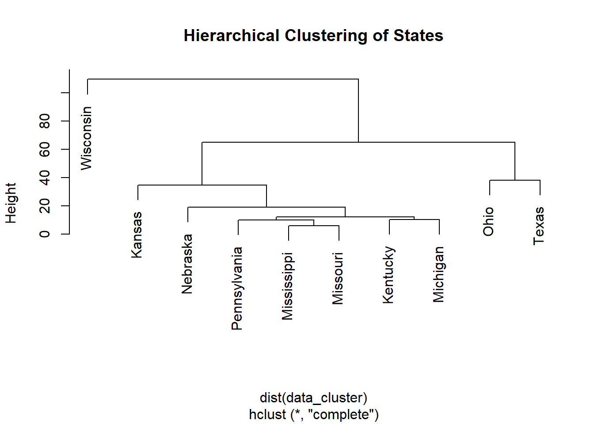

Warning: package 'here' was built under R version 4.3.3Warning: package 'ggplot2' was built under R version 4.3.3Warning: package 'dplyr' was built under R version 4.3.3Warning: package 'scales' was built under R version 4.3.2The structure below is one possible setup for a data analysis project (including the course project). For a manuscript, adjust as needed. You don’t need to have exactly these sections, but the content covering those sections should be addressed.
This uses MS Word as output format. See here for more information. You can switch to other formats, like html or pdf. See the Quarto documentation for other formats.
Warning: package 'here' was built under R version 4.3.3Warning: package 'ggplot2' was built under R version 4.3.3Warning: package 'dplyr' was built under R version 4.3.3Warning: package 'scales' was built under R version 4.3.2Group Ten is pursuing the historical data collected by various public agencies to determine if the impact of Varroa, American Foulbrood, and global warming has demonstrated an increase in hive losses across the United States and Texas. The research will be accomplished using data sets derived from the agencies National Agricultural Statistics Service, Agricultural Statistics Board, and United States Department of Agriculture (USDA). Data sets containing several years of hive losses based on varroa and bacterium losses including recent possible environmental thermal global warming. A visualization of outcomes using R demonstrating and validating possible detrimental effects on honeybee colonies in the United States and Texas wrought by the negative impact of mites, bacterium, and global warming that will affect honey production and inevitably impact food production.
The first image is a pie chart that illustrates the composition of honey by percentage. The main components are:
This composition indicates that honey is primarily made up of sugars, specifically fructose and glucose, with water being the third major component. The presence of minerals, vitamins, and enzymes, though in smaller amounts, adds nutritional value to honey. This detailed breakdown underscores honey’s role as a natural sweetener with additional health benefits beyond its primary carbohydrate content.
Honeybees have been nature’s pollinators for centuries, with documented relationships with humans dating back to ancient Egyptians and Hindus. Historically, humans have maintained beehives, using honey as medicine in cultures such as the Egyptians, Assyrians, Chinese, Greeks, and Romans. The natural antibacterial properties of honey made it a valuable treatment for wounds, preventing infection, a practice used by Romans and Russians during World War I. Honeybees and other pollinators are critical for food production and nutritional security, yet bees face a variety of survival challenges. Currently, Varroa mites impact bee colonies and this mite infestation, a tiny red-brown parasite that can live on adult honeybees and reproduce on larvae and pupae in the developing brood. Another major threat is American Foulbrood Disease (AFB), caused by the bacterium Paenibacillus larvae. A disease that is fatal to honeybee larvae and found worldwide. The only effective control measure is to incinerate and destroy infected hives and live bees mitigating the infectious spread to other colonies. In addition, the exploration of climate change impacting honeybee colony losses has only recently been researched. While there are correlations between higher winter temperatures and greater colony losses, the effects of warmer autumn and winter temperatures on colony population dynamics and age structure as potential causes of reduced colony survival have not yet been fully investigated.Index Catalog // USDA Economics, Statistics and Market Information System. (n.d.-b). Index Catalog // USDA Economics, Statistics and Market Information System. (n.d.-a). , USDA - National Agricultural Statistics Service - Surveys - honey bee surveys and reports. (n.d.).
https://usda.library.cornell.edu/catalog?f%5Bkeywords_sim%5D%5B%5D=honey+bees&locale=en https://www.nass.usda.gov/Surveys/Guide_to_NASS_Surveys/Bee_and_Honey/
The second image is a map illustrating the spread of Varroa mites in the United States from 1986 to 1995. The map uses different colors to represent the year of the first appearance of Varroa mites in each state:
The map reveals the progressive spread of Varroa mites from the mid-1980s to the mid-1990s, affecting bee colonies across the country. The earliest appearances were concentrated in specific regions and gradually spread to more states over time. This visual representation highlights the increasing geographical distribution of Varroa mites and underscores the growing challenge they pose to beekeeping and agricultural industries in the United States.
Written By:sdns6mchl4. (2016, February 24). Varroa mite spread in the United States. Beesource Beekeeping Forums. https://www.beesource.com/threads/varroa-mite-spread-in-the-united-states.365462/ ## General Background Information
Uncapped Honey Floresville,Texas Hive

Capped Honey one Month Later same hive frame- Italian bees Floresville, Texas

Bee colonies maintained by beekeepers are considered livestock by the USDA due to their ability to produce honey, a consumable food item, and their essential role in assisting farmers with pollination crop seasons. Given the importance of bee colonies in agriculture, it was logical to source data from the following two authoritative websites: 1. USDA National Agricultural Statistics Service (NASS): This site provides comprehensive agricultural data, including statistics on honey production and colony health. 2. Bee Informed Partnership: This site offers detailed insights and research on bee colony management and health, contributing valuable information on the status and trends of bee populations. Index Catalog // USDA Economics, Statistics and Market Information System. (n.d.-a). https://usda.library.cornell.edu/catalog?f%5Bkeywords_sim%5D%5B%5D=honey+bees&locale=en
USDA - National Agricultural Statistics Service - Surveys - honey bee surveys and reports. (n.d.). https://www.nass.usda.gov/Surveys/Guide_to_NASS_Surveys/Bee_and_Honey/
Hypothesis: “The negative impacts of mites, bacterium, and global warming have detrimental effects on honeybee colonies in the United States and Texas, which in turn will lead to a decline in honey production and negatively impact food production.” This hypothesis can be tested and validated through a visualization of outcomes using R, demonstrating the relationship between these factors and their effects on honeybee colonies.
Bacterium Infection Foul Brood.

Dead bees resulting from extreme heat found in hive.

To cite other work (important everywhere, but likely happens first in introduction), make sure your references are in the bibtex file specified in the YAML header above and have the right bibtex key. Then you can include like this:
Examples of reproducible research projects can for instance be found in [@mckay2020; @mckay2020a].
Describe your methods. That should describe the data, the cleaning processes, and the analysis approaches. You might want to provide a shorter description here and all the details in the supplement.
Sometimes you might want to show a schematic diagram/figure that was not created with code (if you can do it with code, do it). ?@fig-schematic is an example of some - completely random/unrelated - schematic that was generated with Biorender. We store those figures in the assets folder.
#knitr::include_graphics(here("assets","antigen-recognition.png"))We got our data from the United States Department of Agriculture (USDA).
We decided to clean out our data from a few different datasets. We had to remove blank spaces and columns that were not pertinent to our analysis. We then filtered out other observations that did not directly deal with the data we are exploring. We are looking for cause of death to bee colonies and how they are affected by mites and climate change so we wanted to single out data that represented the losses so we can explore the different states by year and determine how the colonies were affected.
library(readxl)
library(tidyverse)Warning: package 'tidyr' was built under R version 4.3.3Warning: package 'stringr' was built under R version 4.3.2Warning: package 'lubridate' was built under R version 4.3.2── Attaching core tidyverse packages ──────────────────────── tidyverse 2.0.0 ──
✔ forcats 1.0.0 ✔ stringr 1.5.1
✔ lubridate 1.9.3 ✔ tibble 3.2.1
✔ purrr 1.0.2 ✔ tidyr 1.3.1
✔ readr 2.1.4
── Conflicts ────────────────────────────────────────── tidyverse_conflicts() ──
✖ readr::col_factor() masks scales::col_factor()
✖ purrr::discard() masks scales::discard()
✖ dplyr::filter() masks stats::filter()
✖ dplyr::lag() masks stats::lag()
✖ purrr::map() masks maps::map()
ℹ Use the conflicted package (<http://conflicted.r-lib.org/>) to force all conflicts to become errorslibrary(ggplot2)
library(knitr)library(here)
#remove.packages("here")
here()[1] "C:/Users/Leonel/Desktop/MSDA/MS Data Analytics/Current Class/DA 6833/Practicum 2 Github/leonelsalazar-P2-portfolio/starter-analysis-exercise"# Read the CSV file
data <- read.csv(here("Databystate.csv"))# Select all columns except 3, 6, and 9
Data_Clean <- dplyr::select(data, -c(3, 6, 9))# Output cleaned data file to a csv file.
write.csv(Data_Clean, "Data_Clean.csv", row.names = FALSE)
#write.csv(Data_Clean, "C:/Users/ecruz/OneDrive/Documents/UTSA - Data Science Program/Semester Classes/Practicum II Repository/P2-Practicum-II-Portfolio-EdwardCruz/docs/Databystate_Clean.csv")# Assuming your data frame is named "data"
# Filter for rows where "Loss" or "Deadout" is present in any column (case-insensitive)
library(stringr) # Load stringr package for regular expressions
data_filtered <- Data_Clean[rowSums(sapply(data, grepl, pattern = c("Loss"), ignore.case = TRUE)) > 0, ]# Output cleaned data file to a csv file.
write.csv(data_filtered, "Data_Filtered.csv", row.names = FALSE)
#write.csv(Data_Clean, "C:/Users/ecruz/OneDrive/Documents/UTSA - Data Science Program/Semester Classes/Practicum II Repository/P2-Practicum-II-Portfolio-EdwardCruz/docs/Databystate_Filtered.csv")# View data str to see what class they are.
str(data_filtered)'data.frame': 718 obs. of 6 variables:
$ Year : int 2017 2017 2017 2017 2017 2017 2017 2017 2017 2017 ...
$ Period : chr "JAN THRU MAR" "JAN THRU MAR" "JAN THRU MAR" "JAN THRU MAR" ...
$ State : chr "ALABAMA" "ARIZONA" "ARKANSAS" "CALIFORNIA" ...
$ State.ANSI: int 1 4 5 6 8 9 12 13 15 16 ...
$ Data.Item : chr "LOSS, COLONY COLLAPSE DISORDER" "LOSS, COLONY COLLAPSE DISORDER" "LOSS, COLONY COLLAPSE DISORDER" "LOSS, COLONY COLLAPSE DISORDER" ...
$ Value : chr "250" "2,600" "180" "19,000" ...str(data_filtered)'data.frame': 718 obs. of 6 variables:
$ Year : int 2017 2017 2017 2017 2017 2017 2017 2017 2017 2017 ...
$ Period : chr "JAN THRU MAR" "JAN THRU MAR" "JAN THRU MAR" "JAN THRU MAR" ...
$ State : chr "ALABAMA" "ARIZONA" "ARKANSAS" "CALIFORNIA" ...
$ State.ANSI: int 1 4 5 6 8 9 12 13 15 16 ...
$ Data.Item : chr "LOSS, COLONY COLLAPSE DISORDER" "LOSS, COLONY COLLAPSE DISORDER" "LOSS, COLONY COLLAPSE DISORDER" "LOSS, COLONY COLLAPSE DISORDER" ...
$ Value : chr "250" "2,600" "180" "19,000" ...# Load the dataset
data_filtered <- read.csv(here::here("Data_Filtered.csv"), stringsAsFactors = FALSE)
# Convert 'Value' to numeric
data_filtered$Value <- as.numeric(gsub(",", "", data_filtered$Value))
# Handle missing values by replacing NAs with the median value
data_filtered$Value[is.na(data_filtered$Value)] <- median(data_filtered$Value, na.rm = TRUE)
# Boxplot of Value by Year and Data.Item
ggplot(data_filtered, aes(x = factor(Year), y = Value, fill = Data.Item)) +
geom_boxplot() +
theme(axis.text.x = element_text(angle = 45, hjust = 1)) +
scale_y_continuous(labels = comma) +
labs(title = "Boxplot of Value by Year and Data.Item", x = "Year", y = "Value") +
theme_minimal()# Scatterplot of Value by State.ANSI
ggplot(data_filtered, aes(x = State.ANSI, y = Value, color = factor(Year))) +
geom_point() +
labs(title = "Scatterplot of Value by State.ANSI", x = "State.ANSI", y = "Value") +
theme_minimal()# Load necessary library
library(scales)
# Assuming data_filtered is already loaded and has the required columns
# Create the plot
p <- ggplot(data_filtered, aes(x = Period, y = Value, fill = Data.Item)) +
geom_boxplot() +
theme(axis.text.x = element_text(angle = 45, hjust = 1)) +
scale_y_continuous(labels = comma) +
labs(title = "Boxplot of Value by Period and Data.Item", x = "Period", y = "Value")
# Print the plot
print(p)************** Leo provided additional code below and works perfectly********************
# Load necessary libraries
library(ggplot2)
library(dplyr)
library(tidyr)
library(reshape2)Warning: package 'reshape2' was built under R version 4.3.3
Attaching package: 'reshape2'The following object is masked from 'package:tidyr':
smithslibrary(cluster)
Attaching package: 'cluster'The following object is masked from 'package:maps':
votes.republibrary(car)Loading required package: carData
Attaching package: 'car'The following object is masked from 'package:purrr':
someThe following object is masked from 'package:dplyr':
recodelibrary(factoextra)Warning: package 'factoextra' was built under R version 4.3.3Welcome! Want to learn more? See two factoextra-related books at https://goo.gl/ve3WBalibrary(rpart)
library(rpart.plot)Warning: package 'rpart.plot' was built under R version 4.3.3library(randomForest)Warning: package 'randomForest' was built under R version 4.3.3randomForest 4.7-1.1Type rfNews() to see new features/changes/bug fixes.
Attaching package: 'randomForest'The following object is masked from 'package:dplyr':
combineThe following object is masked from 'package:ggplot2':
marginlibrary(e1071)Warning: package 'e1071' was built under R version 4.3.3# Load your dataset
# Assuming your data frame is named 'data_hcny'
data_hcny <- read.csv(here("hcny_CleanDraft.csv"))
data_clean <- na.omit(data_hcny)# Descriptive Statistics
print("Descriptive Statistics:")[1] "Descriptive Statistics:"summary(data_clean) state varroa_mites other_pests disease
Length:11 Min. : 8.00 Min. : 1.70 Min. : 0.100
Class :character 1st Qu.:13.45 1st Qu.: 3.20 1st Qu.: 0.750
Mode :character Median :26.80 Median : 6.40 Median : 1.000
Mean :32.41 Mean :11.55 Mean : 6.718
3rd Qu.:48.85 3rd Qu.:11.85 3rd Qu.: 4.600
Max. :67.20 Max. :42.30 Max. :47.800
pesticides other unknown
Min. : 0.50 Min. : 0.50 Min. : 1.100
1st Qu.: 1.70 1st Qu.: 1.05 1st Qu.: 2.900
Median : 5.70 Median : 3.40 Median : 4.400
Mean :10.34 Mean :10.51 Mean : 8.718
3rd Qu.:11.30 3rd Qu.:11.35 3rd Qu.: 8.100
Max. :49.20 Max. :48.10 Max. :46.800 # Visualizations
# Bar Plot for varroa_mites by State
ggplot(data_clean, aes(x = state, y = varroa_mites)) +
geom_bar(stat = "identity") +
theme(axis.text.x = element_text(angle = 45, hjust = 1)) +
labs(title = "Varroa Mites by State", y = "Percentage", x = "State")# Stacked Bar Plot
data_long <- data_clean %>%
gather(key = "factor", value = "percentage", -state)
ggplot(data_long, aes(x = state, y = percentage, fill = factor)) +
geom_bar(stat = "identity") +
theme(axis.text.x = element_text(angle = 45, hjust = 1)) +
labs(title = "Factors Affecting Bees by State", y = "Percentage", x = "State")# Heatmap
data_melt <- melt(data_clean, id.vars = "state")
ggplot(data_melt, aes(x = variable, y = state, fill = value)) +
geom_tile() +
scale_fill_gradient(low = "white", high = "red") +
theme(axis.text.x = element_text(angle = 45, hjust = 1)) +
labs(title = "Heatmap of Factors Affecting Bees", y = "State", x = "Factor")# Pie Chart for the United States
us_data <- data_clean %>%
filter(state == "United States") %>%
dplyr::select(-state) %>%
gather(key = "factor", value = "percentage")
ggplot(us_data, aes(x = "", y = percentage, fill = factor)) +
geom_bar(width = 1, stat = "identity") +
coord_polar("y") +
theme_void() +
labs(title = "Distribution of Factors Affecting Bees in the United States")
# Correlation Analysis
cor_data <- cor(data_clean[,-1])
print("Correlation Matrix:")[1] "Correlation Matrix:"print(cor_data) varroa_mites other_pests disease pesticides other unknown
varroa_mites 1.0000000 0.62115999 0.5907042 0.65228365 0.6085037 0.55340334
other_pests 0.6211600 1.00000000 0.1180091 0.06810399 0.3449221 0.05806591
disease 0.5907042 0.11800909 1.0000000 0.90369098 0.9194785 0.97833233
pesticides 0.6522836 0.06810399 0.9036910 1.00000000 0.8235853 0.86362322
other 0.6085037 0.34492207 0.9194785 0.82358532 1.0000000 0.86993151
unknown 0.5534033 0.05806591 0.9783323 0.86362322 0.8699315 1.00000000# Assumption Checks for Descriptive Analysis
print("Assumption Checks:")[1] "Assumption Checks:"# Normality check
shapiro_results <- lapply(data_clean[-1], function(column) shapiro.test(column))
print("Shapiro-Wilk Test for Normality:")[1] "Shapiro-Wilk Test for Normality:"print(shapiro_results)$varroa_mites
Shapiro-Wilk normality test
data: column
W = 0.87839, p-value = 0.09925
$other_pests
Shapiro-Wilk normality test
data: column
W = 0.72499, p-value = 0.0009831
$disease
Shapiro-Wilk normality test
data: column
W = 0.51395, p-value = 2.235e-06
$pesticides
Shapiro-Wilk normality test
data: column
W = 0.70512, p-value = 0.0005444
$other
Shapiro-Wilk normality test
data: column
W = 0.70797, p-value = 0.0005924
$unknown
Shapiro-Wilk normality test
data: column
W = 0.55542, p-value = 7.156e-06# Homogeneity of variances
levene_results <- leveneTest(varroa_mites ~ state, data = data_clean)Warning in leveneTest.default(y = y, group = group, ...): group coerced to
factor.print("Levene's Test for Homogeneity of Variances:")[1] "Levene's Test for Homogeneity of Variances:"print(levene_results)Levene's Test for Homogeneity of Variance (center = median)
Df F value Pr(>F)
group 10 NaN NaN
0 # Cluster Analysis
data_cluster <- data_clean %>%
filter(state != "United States") %>%
dplyr::select(-state)
hc <- hclust(dist(data_cluster), method = "complete")
plot(hc, labels = data_clean$state[data_clean$state != "United States"], main = "Hierarchical Clustering of States")
# Principal Component Analysis (PCA)
data_pca <- data_clean %>%
filter(state != "United States") %>%
dplyr::select(-state) %>%
scale()pca_result <- prcomp(data_pca, center = TRUE, scale. = TRUE)
summary(pca_result)Importance of components:
PC1 PC2 PC3 PC4 PC5 PC6
Standard deviation 2.0647 1.1246 0.5666 0.34369 0.15432 0.09672
Proportion of Variance 0.7105 0.2108 0.0535 0.01969 0.00397 0.00156
Cumulative Proportion 0.7105 0.9213 0.9748 0.99447 0.99844 1.00000fviz_pca_var(pca_result, col.var = "contrib", gradient.cols = c("#00AFBB", "#E7B800", "#FC4E07"))# Support Vector Machine (SVM)
svm_model <- svm(varroa_mites ~ other_pests + disease + pesticides + other + unknown, data = data_clean)
summary(svm_model)
Call:
svm(formula = varroa_mites ~ other_pests + disease + pesticides +
other + unknown, data = data_clean)
Parameters:
SVM-Type: eps-regression
SVM-Kernel: radial
cost: 1
gamma: 0.2
epsilon: 0.1
Number of Support Vectors: 10# Assuming predictions and data_clean$varroa_mites are already created
# Example data
data_clean <- data.frame(
varroa_mites = c(5, 10, 15, 20),
other_variable = c(2, 4, 6, 8)
)
# Fit a linear model
model <- lm(varroa_mites ~ other_variable, data = data_clean)
# Generate predictions
predictions <- predict(model, newdata = data_clean)
# Plot the data
plot(predictions, data_clean$varroa_mites,
xlab = "Predictions",
ylab = "Varroa Mites",
main = "Predictions vs Varroa Mites",
las = 1, # makes y-axis labels horizontal
cex.lab = 1.2, # increases axis labels size
cex.axis = 1.2) # increases tick labels size
# Write the cleaned data to a new CSV file
# Assuming your dataset is named data_hcny
data_hcny_clean <- data_hcny %>% drop_na()
write.csv(data_hcny_clean, here("hcnydata_cleaned.csv"), row.names = FALSE)Varroa Mite


Explain anything related to your statistical analyses.
Texas Bee gathering pollen from natural Texas foliage

Use a combination of text/tables/figures to explore and describe your data. Show the most important descriptive results here. Additional ones should go in the supplement. Even more can be in the R and Quarto files that are part of your project.
?@tbl-summarytable shows a summary of the data.
Note the loading of the data providing a relative path using the ../../ notation. (Two dots means a folder up). You never want to specify an absolute path like C:\ahandel\myproject\results\ because if you share this with someone, it won’t work for them since they don’t have that path. You can also use the here R package to create paths. See examples of that below. I generally recommend the here package.
# Install necessary packages
#install.packages("DiagrammeR")
# Load the DiagrammeR package
library(DiagrammeR)Warning: package 'DiagrammeR' was built under R version 4.3.3# Create the flowchart using DiagrammeR
grViz("
digraph Data_Analysis_Flowchart {
graph [layout = dot, rankdir = TB]
node [shape = box, style = filled, color = lightblue]
Define_Objectives [label = 'Define Objectives']
Collect_Data [label = 'Collect Data']
Clean_Data [label = 'Clean Data']
Analyze_Data [label = 'Analyze Data']
Interpret_Results [label = 'Interpret Results']
Visualize_Data [label = 'Visualize Data']
Compile_Report [label = 'Compile Report']
Review_Revise [label = 'Review & Revise']
Present_Report [label = 'Present Report']
Define_Objectives -> Collect_Data
Collect_Data -> Clean_Data
Clean_Data -> Analyze_Data
Analyze_Data -> Interpret_Results
Interpret_Results -> Visualize_Data
Visualize_Data -> Compile_Report
Compile_Report -> Review_Revise
Review_Revise -> Present_Report
}
")Summarize what you did, what you found and what it means.
Discuss what you perceive as strengths and limitations of your analysis.
What are the main take-home messages?
Include citations in your Rmd file using bibtex, the list of references will automatically be placed at the end
This paper [@leek2015] discusses types of analyses.
These papers [@mckay2020; @mckay2020a] are good examples of papers published using a fully reproducible setup similar to the one shown in this template.
Note that this cited reference will show up at the end of the document, the reference formatting is determined by the CSL file specified in the YAML header. Many more style files for almost any journal are available. You also specify the location of your bibtex reference file in the YAML. You can call your reference file anything you like.